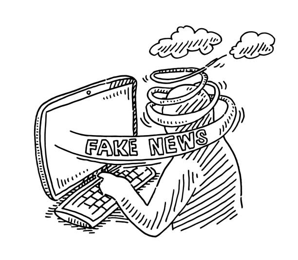
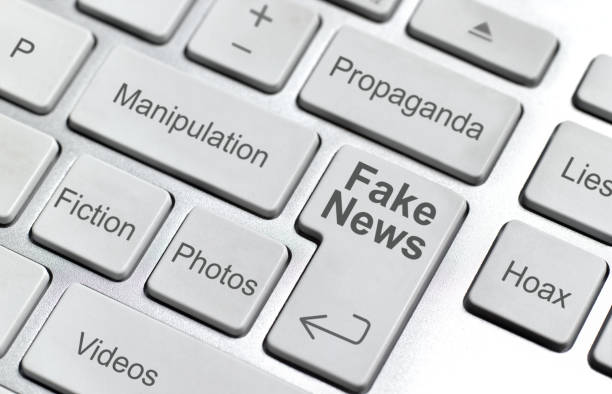
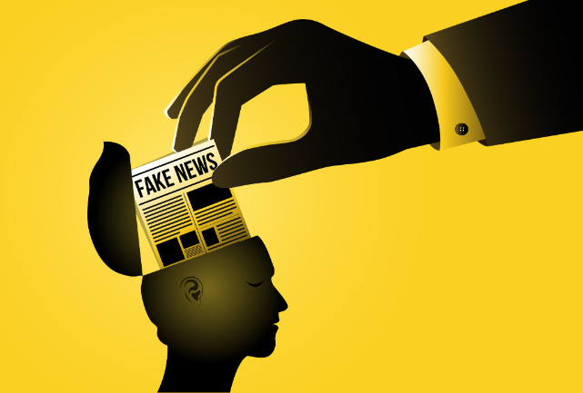
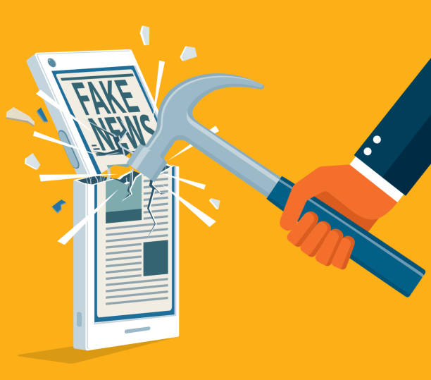

O que é Fake News?
O termo Fake News se originou da língua inglesa, traduzindo o termo de forma literal para o português fica Notícias Falsas.

Fake News são notícias falsas e virais publicadas por veículos da comunicação com o objetivo de enganar o receptor da notícia como se fossem informações verdadeiras, e propagar desinformações a favor de uma opinião, polêmica, política, legitimar um ponto de vista ou até prejudicar uma pessoa ou grupo (geralmente figuras públicas).
Como e quando começou a Fake News?
A Fake News não é de hoje que existe, ja se encaixou em diversos contextos históricos. como por exemplo no decorrer da Guerra Fria, na revolução francesa, revolução americana, entre outros. Mas este termo so ganhou atenção de fato, durante e após a corrida presidencial nos Estados Unidos em 2016, entre Hillary Clinton e Donald Trump.
A primeira e grande fake news, foi o seguinte ocorrido em 1835:
Em 25 de agosto de 1835, um jornal muito relevante de Nova Iorque chamado The New York Sun, publicou uma Fake News usando o nome de um astrônomo e do seu colega de equipe inventado sobre a descoberta de vida na lua. O objetivo da notícia foi aumentar as vendas do jornal e sua relevância. No mês seguinte o jornal admitiu que os artigos eram apenas boatos.
Tipos de fake News

Existem diversos tipos de Fake News, com diferentes intenções, mas sempre com o mesmo objetivo de desinformar o leitor, ouvinte ou telespectador.Dentre essas categorias de fake news há as seguintes:
Fake News desinformativa:
Tem o objetivo de desinformar o receptor da notícia com a intenção de enganar o mesmo, a fim de obter ganhos finânceiros, políticos, legitimar pontos de vista e prejudicar uma pessoa (geralmente pública) ou um grupo de pessoas.
Fake News satírica ou paródia e a de falsa conexão:
fake news satírica/paródia tem o intuito de divertir o receptor com alguma notícia claramente falsa sobre um assunto específico, na maioria das vezes em formato de tirinhas ou memes.
Já a Falsa Conexão usada na maioria das vezes junto com o conteudo desinformativo, é quando imagens, manchetes ou legendas dão falsas ilustrações do que realmente é o conteúdo noticiado; Como por exemplo usar imagens de queimadas da amazônia para representar uma queimada ocorrida nos EUA.
Fake News de conteúdo impostor:
Quando fontes (pessoas, organizações, entidades, empresas) têm seus nomes usados pelo propagador da Fake News com afirmações que não são das fontes e sem permissão delas.
Fake News de conteúdo fábricado e patrocionado:
A Fake News de conteúdo patrocinado, é aquela que divulga um produto patrocinado á ela, de forma enganosa, como; anunciar que um celular tem 12gb de memória ram, mas no produto só há 6gb de memória ram. Já a Fake News de conteúdo fábricado, é aquela feita do zero, é 100% falso e construído com intuito de desinformar o público (sem nenhuma referência) e causar algum mal.
Consequências das Fake News

Uma notícia falsa, por mais ingênua que possa parecer, é sempre prejudicial, pois induz ao erro e contribui para a desinformação da população.
Além disso, as Fake News interferem na ação, na tomada de decisão e até mesmo no posicionamento político das pessoas.
E as consequências das Fake Fews são tão graves que podem inclusive colocar vidas em risco ou prejudicar a saúde das pessoas, como no caso das notícias veiculadas a respeito do uso de hidroxicloroquina no tratamento contra a Covid-19.
Como combater as Fake News?

Para o combate às fake news, vale lembrar que existem alguns instrumentos jurídicos que podem ser aplicados, como o Código Penal, a Lei das Contravenções Penais, o Código Civil, o Marco Civil da Internet e a legislação eleitoral.
Contudo, a legislação brasileira ainda não tipifica esse crime, especialmente no caso da internet. Além disso, sabe-se que o Poder Judiciário nem sempre se mostra eficaz em dar respostas rápidas no combate à proliferação de fake news.
Por isso, uma das melhores formas da população contribuir é checar a veracidade das informações, antes de considerá-las verdadeiras e, principalmente, antes de compartilhá-las. A seguir, separamos algumas ferramentas para combater a Fake News neste Link.